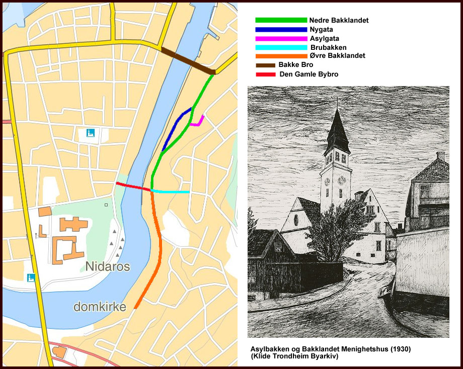
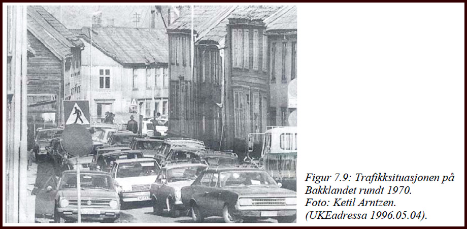
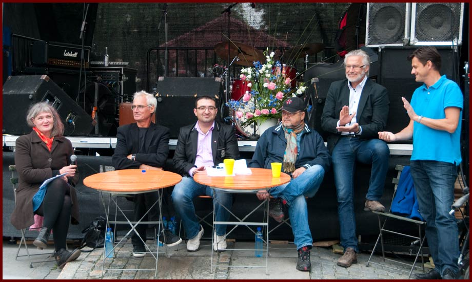

Velkommen til Bakklandet
Dette nettstedet jobber med å presentere
Bakklandet i Trondheim i bilder og ord.
Vi tar mål av oss til
å gjøre dette til det
mest utfyllende nettstedet om Bakklandet. Her vil alle
husene bli avbildet, og det vil samles historie om den
enkelte eiendom.
Bidrag er svært velkomne, og det
oppfordres til å bruke e-post for
å kontakte redaktøren.
This site is about Bakklandet in Trondheim, Norway. All text in norwegian, but the pictures are in english.
Brostein på Nedre Bakklandet (Foto: EspeN-ikon ©)
Bakklandet fremstår i dag feilaktig som "gamle Trondheim". Det opprinnelige og eldste delen av Trondheim, er på Kalvskinnet. Der var de første bosettingene. I dag er Bakklandet og et idyllisk og populært boområde, men opprinnelsen var håndverk, handel og industri.

Bydelens grenser
Bydelen Bakklandet er området langs Nidelva,
øst for Nidrosdomen og Trondheim sentrum. Etter at Bakklandet ble en populær bydel, forsøker meglerer og eiendomsutviklere å tøye bydelsgrensene. På denne siden ønsker vi å trekke den historiske linjen, og benytter derfor eldre kilder.
En av kildene er "Bakklandet sogn og kirke" 1715-1965, trykt i
Johan Christiansens Boktrykkeri, Trondheim 1965. Her leser vi at
beboere på Bakklandet sendte inn søknad til Kirkedepartementet om å
skille ut sognet fra Strinda (som Bakklandet tilhørte).
Bakklandsentusiast, og mannen som står bak Historisk vandring under Bakklandsdagene, forfatter Birger Sivertsen, har bidratt med å spore opp kilde. Han har også egne kommentarer, satt i parentes, i teksten under.
På side 38 i "Bakklandet sogn og kirke", står det så:
"Sognets ytterkant mot øst gikk til Nonnegata, hvor en stor og
vannrik bekk dannet skille mellom Trondheim by og Strinda herred. Det
er en eldgammel skikk å la bekker danne grensen mellom gård og grend.
Denne grensa var også sognegrensa mellom Lade og Bakklandet. Bakke
gård - hvor biskop Peder Krog i sin tid bodde - han som ble far til
sognet og kirka, lå altså i Strinda. Men det var ikke stort stykke av
Nonnegatens område som hørte sognet til. Ikke før en var kommet oppi
Kirkegaten- det daglige navn som har holdt seg opp gjennom tidene var
Kirkesletten - så kom grensen til å gå i midten av denne (altså midt
i gata) bortover mot det nåværende menighetshus (det som idag er
Bakke Bydelshus). Her bøyde den litt opp og gikk langs med
forstøttningsmuren ved "Port Arthur", hvor den tidligere Møllenberg
Skanse lå (altså UNDER muren). Etter å ha kommet bort i Krangata
fortsatte grensen over Kristianstensbakken langs Brinken (altså over
Bekkenjordet) og kom til Lillegårdsbakken, gikk ned denne til midt i
gaten på Øvre Bakklandet, oppover mot foten av Vollabakken hvor den
møtte en bekk som gikk rett ut i elven der Trondheim Jernindustri nå
har sitt fabrikkanlegg. Alt det som lå utenfor tilhørte Lade Sogn
(altså alt som er innenfor er Bakklandet)."
Kommetarer fra Birger Sivertsen:
* Dette medførte for eksempel at de som bodde på øvre side av Kirkegata sognet til Lade kirke.
* Bekken det snakkes om er i dag forlengst lagt i rør, og går under det
tidligere "Hjem for falne Kvinner" som Houchang Fathi har bygd på og
gjort om fullstendig (Øvre Bakklandet 1, såvidt jeg husker).
Men, dette er viktig:
* Nordens første industribedrift var Teglverket, som også tilhørte
Bakklandet, og yttergrensene deres ble også Bakklandets yttergrenser.
Hvorfor det ikke var tatt med i sognets areal skyldes at det ikke
bodde noen folk der. Mot sør var Vollafallet grensen til Elgeseter, og
der stoppet følgelig Bakklandet. Denne grensa er forresten
sammenfallende med gårdenes områder.
Grensen på
for Bakklandet
Bakklandets historie
 Maschius kobberstikk av
Trondheim i 1674. (Kilde Riksarkivet og
Statsarkivet)
Maschius kobberstikk av
Trondheim i 1674. (Kilde Riksarkivet og
Statsarkivet)
Bakklandet ble først bebygd tidlig på 1600-tallet. Sentrum av Trondheim hadde vokst seg stort, og behovet for å bygge utenfor elveløpet begynte å melde seg. Bakklandet ble da Trondheims første forstad. Svenskene beleiret Trondheim i 1658, og brente ned det som var av bebyggelse på Bakklandet. I følge tegningen over, fra 1674, var det kun spredt bebyggelse på den tiden. I 1681 ble bybroen bygd, og dette økte trafikken og mulighetene på Bakklandssiden av Nidelva. Stadige bybranner i trehusbebyggelsen var foranledningen til at Trondheim får sin faste brannordning i 1689, utarbeidet av ingeniør kaptein Friderich Pincier. Brannproblemet førte til et forbud mot å legge til ved bryggene i Kjøpmannsgata, for skip som hadde åpen ild ombord. Det ble også forbud mot lagring av brennbare varer som tran, tjære og krutt. Datidens seilskip hadde behov for ild til matlaging og oppvarming, og behovet for lagring av brennbare varer var tilstede. Handelshusene satte derfor opp brygger på Bakklandet, og aktiviteten skjøt fart.
Tegner: Alf Lannerbäck, Kilde: Försvarsbild
I 1718 ble Trondheim igjen beleiret av svenskene, denne gang med Carl Gustaf Armfeldt i spissen. Bakklandet ble igjen fullstendig nedbrent, men denne gang var det norske tropper som brant ned forstaden, som et ledd i forsvaret av byen. Gjenreisningen skjedde raskt, og utviklingen fortsatte. I 1772 til 1780 ble gatene brolagt, og på den tiden var det 160 gårder og 14 brygger på Bakklandet.
Frem til midten av 1800-tallet sto Bakklandet administrativt utenfor byen, og forstaden utviklet seg til et yrende handelssted. Det ble etablert bedrifter som reperbane og skipsverft, slipp og kran i området. Skjenkesteder og bolighus fulgte etter, og uregulert som området var, ble gater og hus til der det var naturlig plass. Det var gjerne fiskere, håndverkere og arbeidere som bosatte seg i bydelen. Husene var små, og det var enkle kår. Også bryggene var mindre enn de i Kjøpmannsgaten.
Fra 1960-tallet var bydelen truet av sanering. Ny innfartsvei til Trondheim var planlagt, og bebyggelsen på Bakklandet måtte bort. Det var stort engasjement for å bevare den gamle bebyggelsen, og ildsjeler sto i spissen i kampen mot kommunen. Deres engasjement førte ikke til umiddelbar seier, men kommunen har aldri gjennomført planene.
Fra 1970-årene har bebyggelsen blitt restaurert, og Bakklandet fremstår i dag som en svært idyllisk bydel, og mange turister tar turen hit. Kampen for bevaring har vist seg å være svært viktig, og i dag er det hoderystende en tenker tilbake på de kommunale planer. Uavhengig av politisk farge, er alle Trondhjemmere stolte av denne bydelen, og viser den gjerne frem for besøkende.
Bevar Bakklandet!
Kampen om Bakklandet sto i all hovedsak på 70-tallet. På den ene siden sto Trondheim kommune, som siden tidlig på 50-tallet hadde planer om å gjøre Bakklandet om til et effektiv veisystem for Byen. På den andre siden sto velforeningen og bevaringstilhengere.
◊ (1966.10.27) "Hovedtrafikkåre og trafikkterminal på Bakklandet? Interessant
plan i forbindelse med prinsippforslaget til byutvikling. Finn Kleven foreslår
ny forbindelse motorvei øst / motorvei syd og tunneltilknytning av Bynesveien
til det nye ringssystemet av hovedveier."
◊ (Adresseavisen 1967.03.31). "To hus av gammel opprinnelse står for fall på Øvre Bakklandet. Det er Trondheim
Jernindustri som river uverdige menneskeboliger bygget for knappe 100 år tilbake.
De fjernes nå til fordel for parkeringsplass til ansattes biler. De to tømmerhusene
vil gi plass til biler i to rekker, og plassen vil dermed bli langt bedre utnyttet enn
den er i dag."
◊ (1972.07.13) "Generalplan for Trondheim må nå bli sluttbehandlet. Uforsvarlig
med lenger utsettelse." .
◊ (1974.05.11) "Nær katastrofe for Nedre Bakklandet. Vindstille og kjempeinnsats
av brannvesenet hindret brannen i å spre seg."
◊ (1974.12.12) "Bakklandsforbindelsen vil bli ferdig til 1981."
◊ (1976.03.24) "Nå må vi snart få klar beskjed! Beboerne er i ferd med å miste tålmodligheten
- hva skal skje med området?"
◊ (1976.09.01) "Kommunen kaster ut "leieboerne". Øvre Bakklandet tømt for inventar
og avlåst."
◊ (1977.05.13.a) "Avgjørelse om Bakklandstangenten faller neppe i år."
◊ (1977.09.19) "Innflyttingsaksjon på Bakklandet."
◊ (1980.10.16.b) "Bakklandets fremtid sikret. Vekst og velstand tonen i Bakklandsutredningen."
Kommunen ble i stor grad styrt av Arbeiderpartiet og Høyre i denne perioden. AP's innsats for gjennoppbygging etter krigen, ble vidreført på seksti og søttitallet, men da med modernisering og tilrettelegging for økt velstand, som ledestjerne. I disse gode intensjoner, lå det også en forstålse for at noe måtte ofres på fremgangens alter.
Bevaringstanken var ganske fjern, og de som hevdet noe annet ble sett på som sand i maskineriet. AP fikk god støtte fra Høyre i dette, og bystyret var nokså samstemt. Vi hadde ikke tid til å bevare, vi skulle modernisere og tilpasse oss den rivende utviklingen i verden. Amerikanerne satte folk på månen i 1969. Hvem brydde seg vel om gamle hus? Et vanlig synspunkt blant politikere og Trondheimsbefolkning var "Riv sjiten!"
Bevaringstilhengerne var gjerne beboere, velforeningen, samt entusiaster. God støtte var det å hente hos det voksende "suffer-miljøet"(SUF= Sosilaistisk ungdomsfylking). Sufferne var politisk på ytre venstre, og på slutten av sekstitallet beryktet som markante politiske aktivister.
Det første organiserte initiativ til å ta vare på bydelen, kom fra "Miljøgruppa på Bakklandet" i 1971. Miljøgruppa var forløperen til Bakklandets og Lillegårdsbakkens Velforening. Målet deres var å bevare Bakklandet som boligområde. Mange i området bodde i ganske falleferdige hus, men bokostnadene var overkommelige. Også studenter tok del i bevaringstanken, selv om de bare bodde i byen for en begrenset periode.
Husokkupasjoner ble benyttet som et virkemiddel for å forhindre riving. Velforeninga tok initiativ til å flytte folk inn i de tomme husene. Det forhindret at hjemløse benyttet husene som nattlosji, og at husene forfalt ytterligere. Det ble hevdet at kommunen bevist lot husene stå tomme, for at forfallet skulle forsterkes. Velforeningen bidro til at hus ble satt i stand på dugnad, for å hindre at forfall ble brukt som argument for riving.
◊(Adresseavisen 1975.06.19) "Nok en bygning på Bakklandet ble revet i går kveld. I løpet av et par kveldstimer
hadde en bulldoser og en gravemaskin jevnet Nedre Bakklandet 43 med jorden,
og to lastebiler fjernet hurtig restene. Alt i januar vedtok bygningsrådet
rivingstillatelsen for dette bygget. Både Samarbeidsgruppa for Natur og Miljøvern
og Velforeningen for Bakklandet protesterte den gang mot vedtaket. De mente huset
var fullt brukbart og at kommunen ville rive det bare for å gi plass til motorveien.
Protesten ble ikke tatt til følge med den begrunnelsen at disse foreningene ikke hadde
rettslig klageinteresse i denne saken. Det siste året har huset stått tomt, og naboene
kunne fortelle at det har vært tilholdssted for tilfeldig besøkende. For ikke
lenge siden brant huset ved siden av, og i nabolaget var det frykt for at også dette
ville begynne å brenne,....Huset var bygget i hel tømmer og rivingsarbeiderne kunne
fortelle at det ikke var særlig råttent." .
Stort sett var det kommunen som stod for rivingen av gamle trehus på Bakklandet.
Hus som ikke ble revet, ble ofte stående tomme, uten strøm eller vann, men
åpne for hvem som helst som ville bruke husene som nattlosji. Flere av husene ble
brannherjet og senere revet. Det ble derfor spekulert i om en pyroman var på
ferde. En populær revyvise fra UKA-69,
(Spill sangen)
"Pyromanen", harselerte med at kommunen
hadde ansatt en pyroman som skulle gjøre kommunens saneringsplan lettere å
realisere (Studentenes Interne Teater 1969). De ansvarlige i kommunen så neppe
de hyppige brannene på Bakklandet som noe stort tap. Skadene trengte ikke være
særlig omfattende før rivingsmannskapet var på pletten (Stugu 1997a:163).

◊"Ingen annen bydel i Trondheim har vært nærmere døden enn Nedre Bakklandet.
I stor grad kommunalt eiet, innkjøpt bit for bit med tanke på riving for å gi plass
for den nye hovedveien over Bakklandet. Gjennom mange år forsømt, overlatt til seg
selv, tilfeldigheten og forfallet. Svært mange betraktet slitasjen så omfattende at det
knapt fantes redning for den vindskeive, kommunalt eide trehusbebyggelsen. Men
fortsatt skjer det undre. I dag blåser det igjen en optimismens vind gjennom bydelen.
Byggeaktiviteten er påfallende. Målet er å gjøre den tiltagende slum til et av
Trondheims mest attraktive boområder!" (Adresseavisen 1988.04.18).
I dag fremstår Bakklandet som en idyllisk bydel og med gode boforhold. Den har blitt en av byens viktigste turistattraksjoner, og er kjent langt ut over landets grenser. Trehusbeyggelsen i Trondheim regnes i dag som en av Europas viktigste. Målet til aktivistene ble nådd, men med en bismak: I dag er Bakklandet så attraktivt at boligprisene har skutt i været, og dermed ekskludert mange fra å bo der.
Kilder:
- Svært mye av teksten er hentet eller omskrevet fra Dag Kittang's glimrende avhandling om "Trebyen Trondheim". Interesserte anbefales å lese denne i sin helhet:
(Klikk her)
- Gateavisa - Opprør mot folkevalgte vandaler av Edward Mogstad (Klikk her)
- SIT (Studentersamfunnets interne teater) uka-revy (Klikk her)
↑ Til toppen
Bakklandsdagene 2012
Her er noen foto-glimt fra Bakklandsdagene 2012:
Bakklandets Allsidige Selskap. Her er det stor kunstnerisk aktivitet, både i forkant av, og under Bakklandsdagene. (Foto: EspeN-ikon ©)
Bugnende hage i bakgården på Bakklandets allsidige selskap. Her kan du gå på oppdagelsesreise. (Foto: EspeN-ikon ©)
Sasha tar livet med ro, selv om det er travle dager rundt henne. Alle på Nedre Bakklandet kjenner Sasha. (Foto: EspeN-ikon ©)
Bakklandets Allsidige Selskap har mange besøkende under Bakklandsdagene. (Foto: EspeN-ikon ©)
Astri trivdes godt under Bakklandsdagene på Sandaunets plass. Her fikk hun ikke bare besøk fra Trondhjemmere, men turister fra hele verden. (Foto: EspeN-ikon ©)
Heste- og ponniridning var nytt av året, og ble populært hos "Trondhjems-pian". (Foto: EspeN-ikon ©)
På Krana sto blant andre Tove Moe (t.v), og solgte brukskunst. (Foto: EspeN-ikon ©)
Krana var full av liv under Bakklandsdagene. (Foto: EspeN-ikon ©)
 Litt av tilbudet på Krana..... (Foto: EspeN-ikon ©)
Litt av tilbudet på Krana..... (Foto: EspeN-ikon ©)
Fargerike Bakklandsdager. (Foto: EspeN-ikon ©)
Folksomt på Bakklandet. (Foto: EspeN-ikon ©)
 "Who's the mama and the tender three", inntok Bybro-scenen på lørdag klokken 13. (Foto: EspeN-ikon ©)
"Who's the mama and the tender three", inntok Bybro-scenen på lørdag klokken 13. (Foto: EspeN-ikon ©)
 Auksjon ved Anderssen Antikk. (Foto: EspeN-ikon ©)
Auksjon ved Anderssen Antikk. (Foto: EspeN-ikon ©)
 Politisk debatt om Bakklandets fremtid. (Foto: EspeN-ikon ©)
Bakklandsbeboer utfordrer politikerene. (Foto: EspeN-ikon ©)
 Anthony Hope leverte tett poprock av godt merke. Denne gjengen finslipes nå på LIPA (Paul McCartney - skolen), og vi vil garantert høre fra de igjen. (Foto: EspeN-ikon ©)
Anthony Hope leverte tett poprock av godt merke. Denne gjengen finslipes nå på LIPA (Paul McCartney - skolen), og vi vil garantert høre fra de igjen. (Foto: EspeN-ikon ©)
RETRO TULL serverte lettfordøyd sang og moro, på sjarmerende vis. (Foto: EspeN-ikon ©)
øvre Bakklandet - Bakklandsdagene 2012 . (Foto: EspeN-ikon ©)
Kira M var med på bakklandsdagene også i 2012. (Foto: EspeN-ikon ©)
Varene gikk unna som varmt hvetebrød og hakka møkk. (Foto: EspeN-ikon ©)
Bakklandsdagene 2012. (Foto: EspeN-ikon ©)
Bakklandets Skydsstation - et populært sted å kose seg.. (Foto: EspeN-ikon ©)
Populære årgangsleker. (Foto: EspeN-ikon ©)
Lysthuset er fast utstiller på Bakklandsdagene. (Foto: EspeN-ikon ©)
Nedre Bakklandet under Bakklandsdagene 2012. (Foto: EspeN-ikon ©)
På Bakklandet nyter man livet..... (Foto: EspeN-ikon ©)
Birger Sivertsens Bakklandsvandring, en historisk vandring med humoristisk vri. (Foto: EspeN-ikon ©)
Bakklandsdagene 2012 er over. Vi gleder oss til neste år. (Foto: EspeN-ikon ©)
Bakklandsdagene har egen hjemmeside: (Klikk her) >p>
Bakklandsdagene 2011
Her er noen foto-glimt fra Bakklandsdagene 2011:
 Ansiktsmaling under Bakklandsdagen 2011. Siri Dahlen har godt lag med alle de forventingsfulle barna (Foto: EspeN-ikon ©)
Siri Dahlen kontaktinfo (Klikk her)
Ansiktsmaling under Bakklandsdagen 2011. Siri Dahlen har godt lag med alle de forventingsfulle barna (Foto: EspeN-ikon ©)
Siri Dahlen kontaktinfo (Klikk her)
Ansiktsmaling under Bakklandsdagen 2011.(Foto: EspeN-ikon ©)
Folkeliv under Bakklandsdagene 2011 (Foto: EspeN-ikon ©)
United colors of Bakklandet (Foto: EspeN-ikon ©)